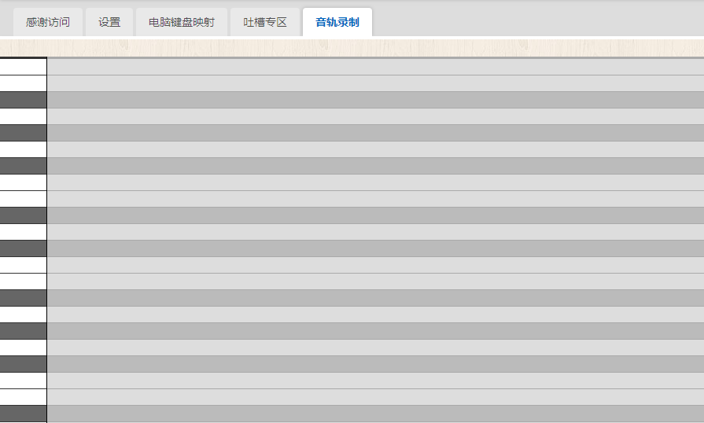
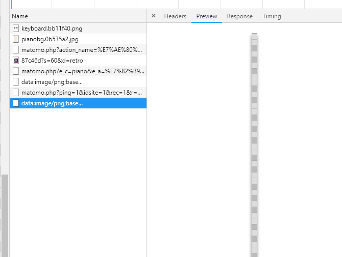

简单钢琴-音轨录制功能开发(二) - canvas绘制右侧音轨区域的背景

发布于
右侧的音轨区域考虑到尽量减少dom的数量，于是决定背景采用canvas绘制1像素宽度的图片，然后用一个div做背景，用backgroundImage的方式将canvas的图片设置背景图，然后设置background-repeat: repeat-x;
加完背景之后效果图如下：
其中heiKeyArray的值如下：(请原谅我拼音变量命名法)
heiKeyArray = [2, 0, 5, 7, 0, 10, 12, 14, 0, 17, 19, 0, 22, 24, 26, 0, 29, 31, 0, 34, 36, 38, 0, 41, 43, 0, 46, 48, 50, 0, 53, 55, 0, 58, 60, 62, 0, 65, 67, 0, 70, 72, 74, 0, 77, 79, 0, 82, 84, 86, 0, 0]
贴上 bg-repeat.js
import { heiKeyArray } from '../../keyboard.js';
export default function getRepeatImg () {
const margin = 2;
const keyHeight = 20;
const height = (keyHeight + 1) * 88 + 1 + margin * 2;
// const canvas = document.getElementById('yg-canvas');
const canvas = document.createElement('canvas');
canvas.height = height;
canvas.width = 1;
const ctx = canvas.getContext('2d');
ctx.fillStyle = '#aaa';
ctx.fillRect(0, 0, 5, height);
let y = margin + 1;
heiKeyArray.forEach((element) => {
ctx.fillStyle = '#ddd';
ctx.fillRect(0, height - y, 5, -keyHeight);
y += keyHeight + 1;
if (element > 0) {
ctx.fillStyle = '#bbb';
ctx.fillRect(0, height - y, 5, -keyHeight);
y += keyHeight + 1;
}
});
return canvas;
}
贴上vue组件中的script部分：
import { heiKeyArray } from '../../keyboard.js';
import getRepeatImg from './bg-repeat.js';
export default {
data () {
return {};
},
mounted () {
let keyDomList = '';
heiKeyArray.forEach((element) => {
keyDomList = '<div class="w"></div>' + keyDomList; // 白键
if (element > 0) {
keyDomList = '<div class="h"></div>' + keyDomList; // 黑键
}
});
this.$refs.keyList.innerHTML = keyDomList;
const canvas = getRepeatImg();
const src = canvas.toDataURL('png');
this.$refs.yinguiBg.style.backgroundImage = `url(${src})`;
},
};
其中canvas.toDataURL('png')导出成base64的结果如下：

这里用一张1像素宽的图片替代88个dom，是能够起到优化的效果的。由于是1像素宽，预览起来看不清。
调一下宽度后，预览的截图如下：

下一步准备开发音符块的显示功能，音频的保存功能之前已经开发了，之前的音轨显示的功能已经有了，这里对之前开发的内容进行适当的调整和优化。
评论
或 匿名发表评论